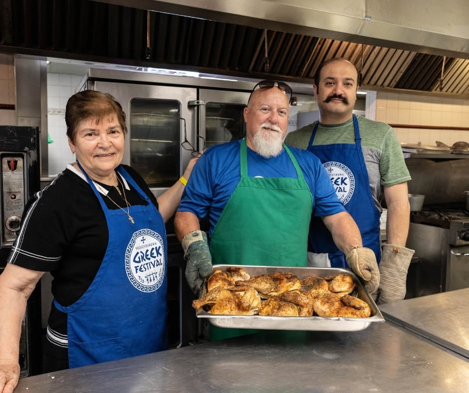
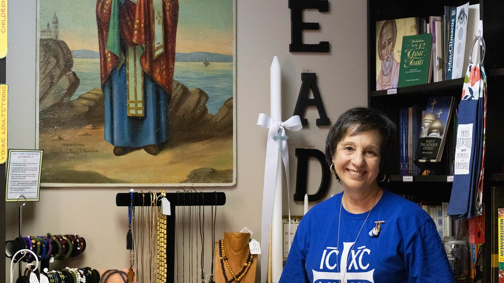
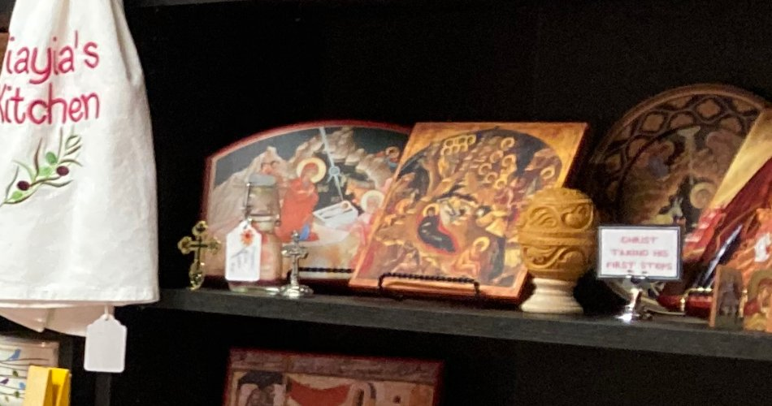

Life Together
The life of our parish extends beyond Sunday morning. We worship together, share meals, celebrate feast days, teach our children, serve our neighbors, and grow together in the life of Christ.
Come and see what parish life looks like at Nativity of the Theotokos.
Worship & Feast Days
Divine services, Holy Week and Pascha, feast days, processions, baptisms and other moments in the sacramental life of the parish.
Fellowship & Coffee Hour
Coffee hour after the Divine Liturgy, shared meals, celebrations and parish gatherings. It is potluck-style, and an old Christian habit — an agape meal, the shared table that follows worship.
Children & Families
Sunday School, children participating in parish life, family events and opportunities for children to grow within the Church.
Learning & Formation
Bible studies, catechesis, classes, talks and other opportunities to learn about and grow in the Orthodox faith.
Service & Outreach
Ways our parish serves people within the parish and our surrounding community. Most of it happens through our ministries, and every one of them welcomes newcomers.

Parish Events & Traditions
Festivals, celebrations, seasonal traditions and other events unique to the life of our parish.
Our Parish Bookstore
The bookstore is open every Sunday after the Divine Liturgy, and carries Orthodox books, prayer books, pamphlets, icons, prayer ropes, incense, candles and other devotional items. Parishioners and visitors are both welcome to browse.


Photographs from our parish
The next few weeks
Come and be part of it
Belonging here begins with turning up.
If something above is what you have been looking for, our ministries are the way in — none of them asks you to have been here long. And if you are already part of the parish, everything practical for the week ahead is gathered in one place.